13. Pruebas Múltiples
Resumen
Cuando se realizan muchas pruebas de hipótesis simultáneamente, el riesgo de falsos positivos se acumula. Este capítulo cubre métodos para controlar la tasa de error por familia (FWER) y la tasa de descubrimientos falsos (FDR), incluyendo la corrección de Bonferroni y el procedimiento de Benjamini–Hochberg.
El Problema de las Pruebas Múltiples
En el contexto de la genómica y otras áreas de alta dimensión, es común probar miles de hipótesis simultáneamente. Por ejemplo, en un estudio de expresión génica podemos probar si cada uno de \(m = 20,000\) genes está diferencialmente expresado entre dos grupos.
Si realizamos \(m\) pruebas independientes, cada una con nivel de significación \(\alpha = 0.05\), esperamos \(m \times \alpha\) falsos positivos. Para \(m = 20,000\), esto significa aproximadamente \(1,000\) falsos positivos, un número inaceptablemente alto.
La Figura 1 ilustra el problema: al aumentar el número de pruebas, la distribución del mínimo valor \(p\) se desplaza hacia cero incluso cuando todas las hipótesis nulas son ciertas.
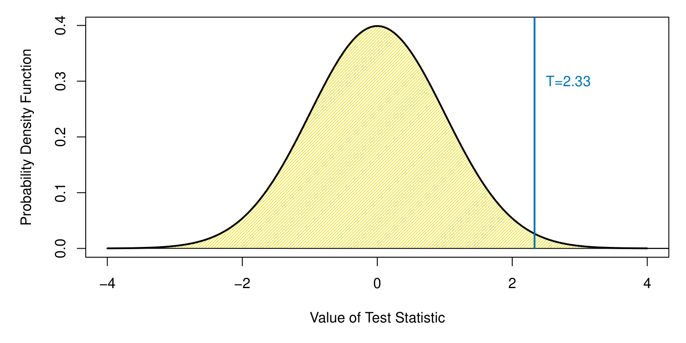
Tasa de Error por Familia (FWER)
La tasa de error por familia (Family-Wise Error Rate, FWER) es la probabilidad de cometer al menos un falso positivo entre todas las pruebas:
\[\text{FWER} = P(\text{al menos un falso positivo})\]
Corrección de Bonferroni
La corrección de Bonferroni controla la FWER rechazando \(H_{0j}\) cuando \(p_j \le \alpha / m\). Es un método conservador: garantiza que FWER \(\le \alpha\), pero reduce el poder estadístico.
La Figura 2 compara el umbral de Bonferroni con el umbral nominal (\(\alpha = 0.05\)) para \(m = 1,000\) pruebas en datos simulados donde algunas hipótesis nulas son falsas.
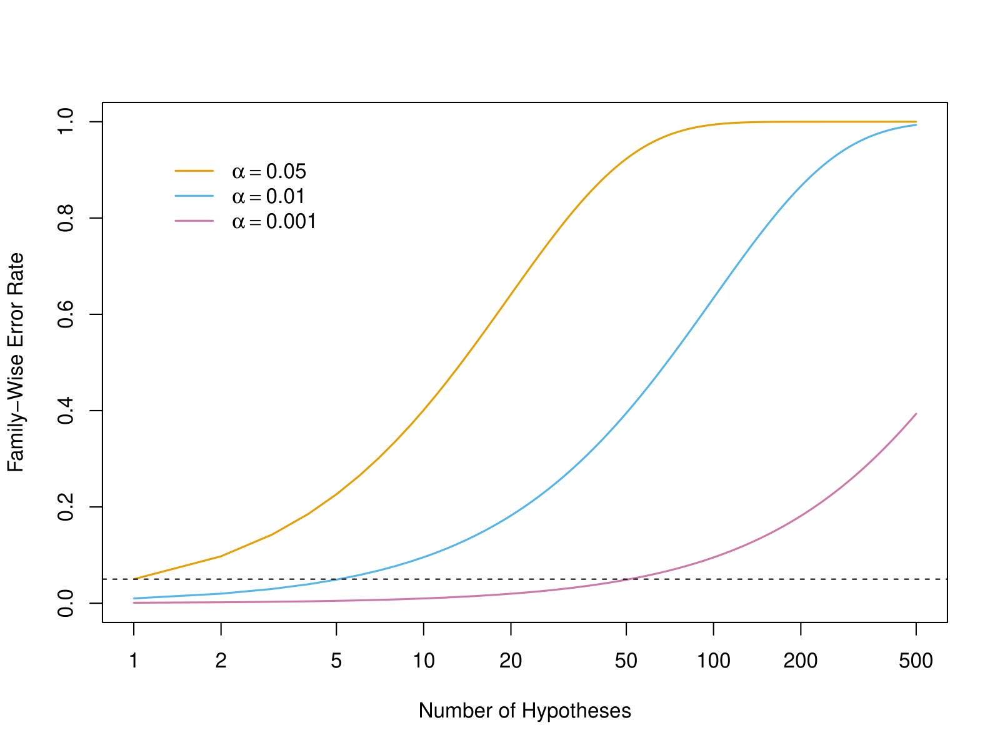
Procedimiento de Holm
El procedimiento de Holm (o Bonferroni secuencial) es menos conservador que Bonferroni. Ordena los valores \(p\) de menor a mayor y rechaza \(H_{0(j)}\) si \(p_{(j)} \le \alpha / (m - j + 1)\).
Tasa de Descubrimientos Falsos (FDR)
La tasa de descubrimientos falsos (False Discovery Rate, FDR) es una alternativa menos conservadora que la FWER. En lugar de controlar la probabilidad de cualquier falso positivo, controla la proporción esperada de falsos positivos entre los rechazos:
\[\text{FDR} = E\left[\frac{V}{R}\right]\]
donde \(V\) es el número de falsos positivos y \(R\) el número total de hipótesis rechazadas.
Procedimiento de Benjamini–Hochberg
El procedimiento de Benjamini–Hochberg (BH) controla la FDR. Dados los valores \(p\) ordenados \(p_{(1)} \le p_{(2)} \le \cdots \le p_{(m)}\), rechazamos \(H_{0(1)}, \ldots, H_{0(k)}\) donde \(k\) es el mayor índice tal que:
\[p_{(k)} \le \frac{k}{m} q\]
con \(q\) el nivel deseado de FDR (típicamente \(q = 0.05\) o \(0.1\)).
La Figura 3 muestra el procedimiento BH gráficamente: los valores \(p\) ordenados se comparan con la línea de pendiente \(q/m\).
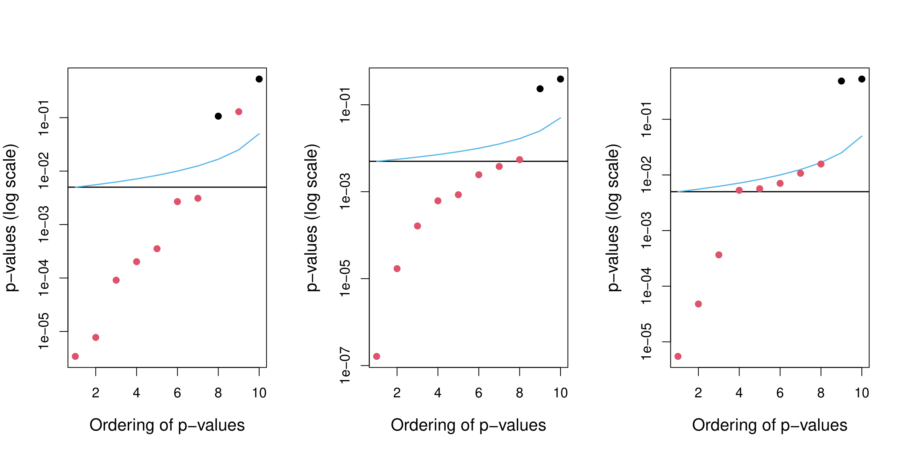
Comparación de FWER y FDR
La Figura 4 compara el número de descubrimientos (rechazos) usando Bonferroni (FWER) y Benjamini–Hochberg (FDR) en datos simulados con diferentes proporciones de hipótesis alternativas verdaderas.
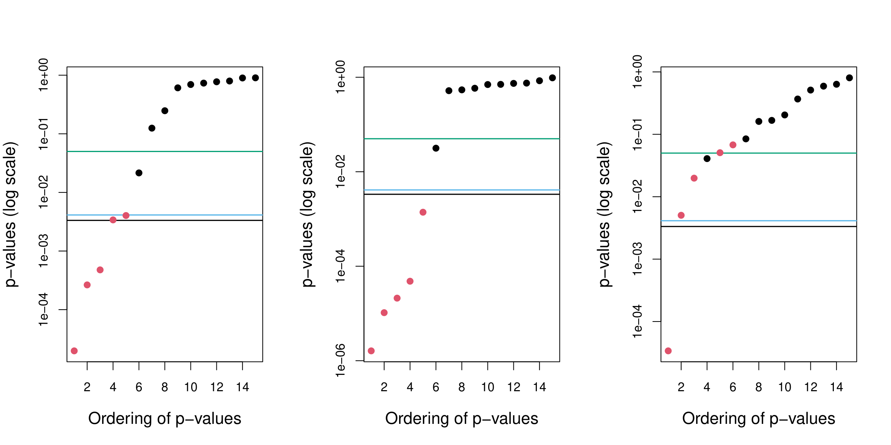
Aplicación a Datos Genómicos
Análisis de Expresión Génica
Los métodos de pruebas múltiples son esenciales en estudios de expresión génica, donde se prueban miles de genes simultáneamente.
La Figura 5 muestra un volcano plot (gráfico de volcán) para un estudio de expresión génica, donde cada punto representa un gen. El eje \(x\) muestra el cambio en la expresión (log fold-change) y el eje \(y\) el logaritmo del valor \(p\).
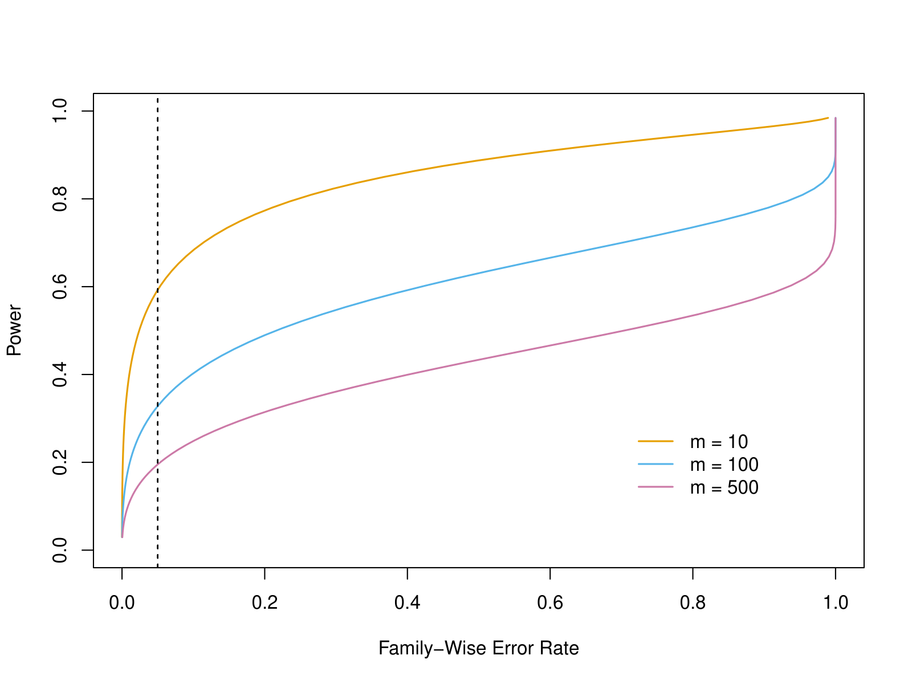
La Figura 6 muestra un heatmap de los genes más significativos en un estudio de cáncer.
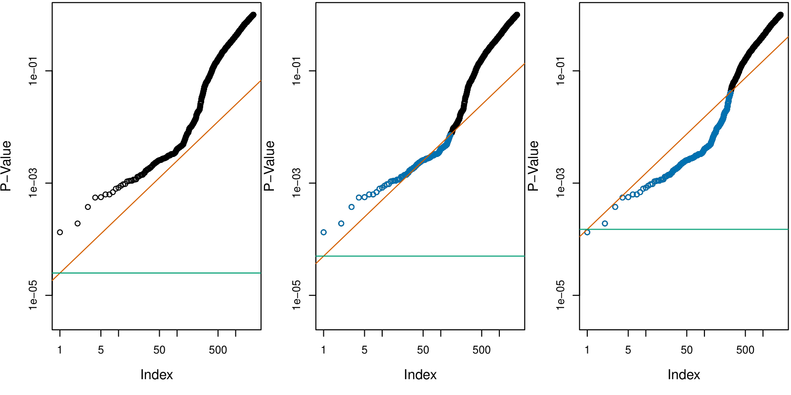
Estudio de Asociación del Genoma Completo (GWAS)
En los estudios GWAS (Genome-Wide Association Studies) se prueban millones de variantes genéticas. La Figura 7 muestra un Manhattan plot típico de un GWAS.
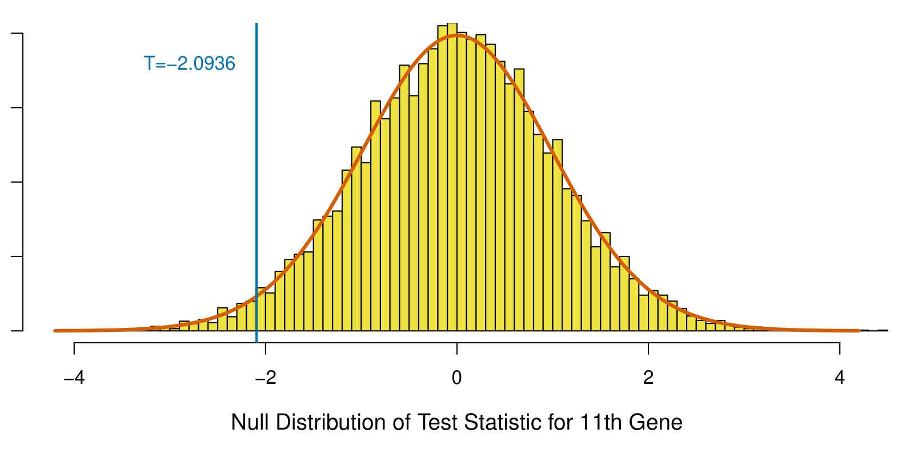
Valores \(p\) Ajustados
Los valores \(p\) ajustados (o corregidos) transforman los valores \(p\) originales para que puedan compararse directamente con el nivel de significación \(\alpha\):
- Bonferroni: \(\tilde{p}_j = \min(m p_j, 1)\)
- BH: \(\tilde{p}_{(j)} = \min_{k \ge j} \left(\frac{m}{k} p_{(k)}, 1\right)\)
La Figura 8 compara los valores \(p\) originales con los ajustados por Bonferroni y BH para un conjunto de datos simulado.
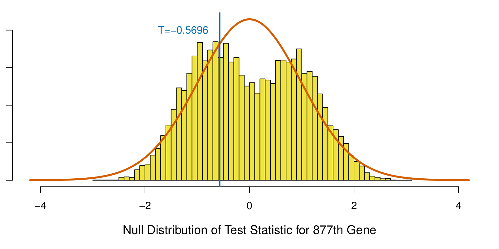
Dependencia entre Pruebas
Los procedimientos de Bonferroni y BH asumen independencia o dependencia positiva entre las pruebas. Cuando hay dependencia compleja, pueden usarse métodos alternativos como el procedimiento de Benjamini–Yekutieli.
La Figura 9 muestra el efecto de la dependencia entre pruebas sobre el control de la FDR en datos simulados.
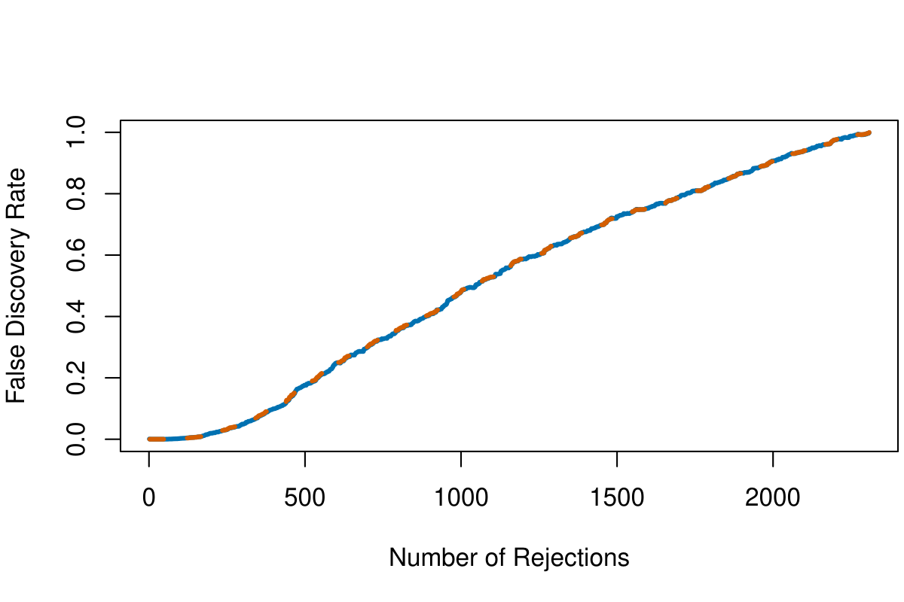
Poder y Tasa de Falsos Negativos
La Figura 10 muestra el poder (tasa de verdaderos positivos) de los diferentes métodos de corrección para pruebas múltiples en función del tamaño del efecto y el número de pruebas.
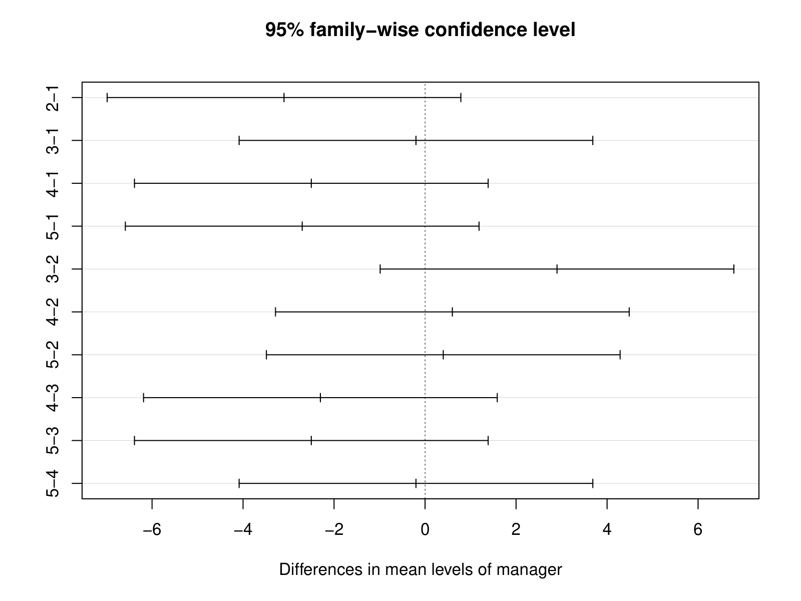
Resumen Gráfico de Métodos
La Figura 11 presenta un resumen gráfico de los diferentes métodos de corrección para pruebas múltiples y sus propiedades.
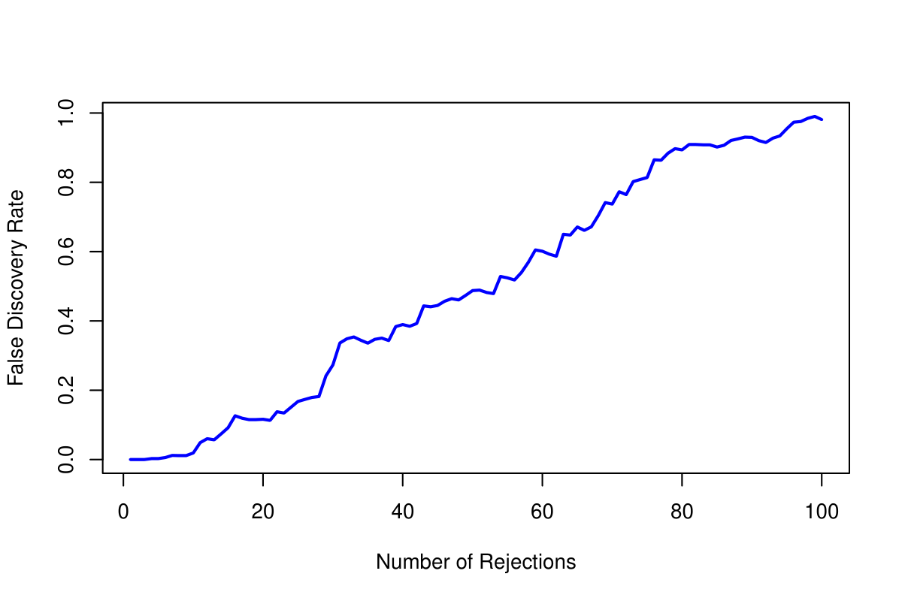
Laboratorio
Los laboratorios con el código completo de este capítulo están disponibles en el sitio oficial del libro: statlearning.com. También puedes acceder a los notebooks en el repositorio oficial de ISLP: ISLP_labs en GitHub.